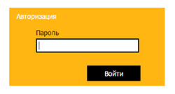
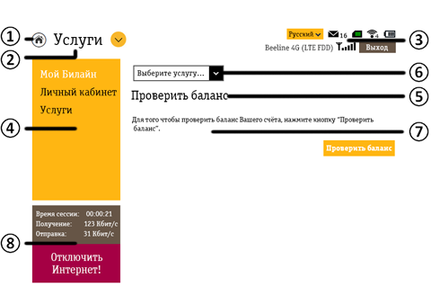

4G/Wi-Fi-роутер Y900NB
Руководство пользователя
1 Информация об устройстве
1.1 Комплектация
- 4G/Wi-Fi-роутер Y900NB
- Батарея
- Кабель USB 3.0
- OTG-кабель
- Зарядное устройство
- Руководство пользователя
- Гарантийный талон
1.2 Технические характеристики
- Стандарты связи: GSM 850/900/1800/1900 МГц, UMTS 900/2100 МГц, LTE FDD 800/1800/2600 МГц (B20, B3, B7);
CA: B3+B3, B7+B7, B3+B7, B3+B20, B7+B20. - Скорость передачи данных по технологии LTE-Advanced – до 300* Мбит/с при загрузке данных и до 50* Мбит/с при отправке данных.
- Скорость передачи данных по технологии LTE – до 150* Мбит/с при загрузке данных и до 50* Мбит/с при отправке данных.
- Скорость передачи данных по технологии DC-HSPA+ – до 42* Мбит/с при загрузке данных и до 5,76* Мбит/с при отправке данных.
- Скорость передачи данных по технологии EDGE – до 236,8* Кбит/с при загрузке данных и до 118* Кбит/с при отправке данных.
- Поддержка Wi-Fi IEEE 802.11 a/b/g/n/ac, диапазоны 2,4 и 5 ГГц, скорость передачи данных до 867** Мбит/с.
- Поддержка одновременного подключения до 32 Wi-Fi-устройств.
- LED-индикаторы.
- Поддержка карт памяти microSD, максимальный объем – 32 ГБ.
- Батарея 3600 мА∙ч
- Разъём micro-USB.
- Поддержка приёма и отправки SMS.
- Поддержка USSD.
- Поддержка функции «Внешняя аккумуляторная батарея» (POWERBANK). Выход: 5.0 В, 1000 мА·ч.
Роутер изначально настроен на работу с SIM-картами «Билайн».
* Указанные скорости являются теоретическим максимумом. Реальные скорости зависят от рельефа местности, плотности окружающей застройки, загруженности и конфигурации сети сотового оператора, параметров тарифного плана и других внешних факторов.
** Указанные скорости являются теоретическим максимумом для технологии Wi-Fi IEEE 802.11 ac. Реальные скорости зависят от настроек оборудования, рельефа местности, плотности окружающей застройки, конфигурации сети Wi-Fi и других внешних факторов.
Примечание: для повышения скорости приема и передачи данных, а также для улучшения качества работы роутера рекомендуется располагать роутер в зоне максимального сигнала сотовой сети, например, около окна.
2 Внешний вид и описание элементов управления
4G/Wi-Fi-роутера
2.1 Внешний вид

- LED-индикатор батареи.
- LED-индикаторы типа сети - 2G/3G/4G.
- LED-индикаторы уровня сигнала сети.
- Разъём microUSB 3.0.
- Клавиша питания.
- В выключенном состоянии: нажмите и удерживайте клавишу для включения устройства. Как только LED-индикатор батареи загорелся синим, вы можете отпустить клавишу.
- Во включенном состоянии: нажмите и удерживайте клавишу для выключения устройства. Как только LED-индикатор батареи загорелся красным, вы можете отпустить клавишу.
- Клавиша WPS.
2.2 Описание LED-индикаторов
Ниже приведено описание LED-индикаторов устройства.
| Название | Состояние индикатора | Описание |
| LED-индикаторы уровня сигнала сети | Не горит | Нет сигнала сети. |
| Горит синим от 1 до 4 делений | Отображается динамически текущий уровень сигнала сети от 1 (слабый) до 4 (хороший). | |
| LED-индикаторы типа сети - 2G/3G/4G | Один из индикаторов горит синим | Устройство зарегистрировано в 2G/3G/4G сети. |
| Один из индикаторов мигает синим | Передача данных в 2G/3G/4G сети. | |
| Все индикаторы мигают синим одновременно | Нет SIM-карты, ошибка SIM-карты, нет сети. | |
| Не горит | Идёт поиск сети или питание устройства выключено. |
| Название | Состояние устройства | Состояние индикатора | Уровень батареи |
| LED-индикатор батареи | Подключён по USB к источнику питания (зарядное устройство или USB-порт ПК), вне зависимости от того включён роутер или выключен | Мигает красным | 0-20% |
| Мигает синим | 21-99% | ||
| Горит синим | 100% | ||
| Не подключён к источнику питания по USB, роутер включён | Горит красным | 1-20% | |
| Горит синим | 21-100% | ||
| Не подключён к источнику питания по USB, роутер выключен | Не горит | Любой | |
| Роутер в процессе соединения через WPS | Мигает попеременно красным и синим | Любой |
2.3 Как пользоваться роутером
Для установки роутера следуйте указаниям пошаговой инструкции.
Она поможет Вам убедиться, что Вы все сделали правильно.
Она поможет Вам убедиться, что Вы все сделали правильно.
Шаг 1. Установка USIM-карты

- Снимите крышку 4G/Wi-Fi-роутера и извлеките батарею, как показано на рисунке.
- Вставьте в 4G/Wi-Fi-роутер USIM-карту. Убедитесь, что USIM-карта полностью встала на место.
Внимание:
работа роутера и программного обеспечения гарантируется только при использовании USIM-карты «Билайн». - В случае необходимости, вставьте SD-карту памяти, соблюдая указанное направление. Так же убедитесь, что SD-карта полностью встала на место.
Примечание:
максимальный поддерживаемый объем карты памяти – 32 ГБ. - Установите батарею на место и закройте крышку 4G/Wi-Fi-роутера.
Шаг 2. Включение роутера
Нажмите кнопку питания на корпусе устройства и удерживайте ее до тех пор, пока все LED-индикаторы не мигнут один раз.
Шаг 3. Соединение роутера с другими устройствами
Соединение через USB-кабель
Подключите роутер к USB-порту компьютера с помощью USB-кабеля из комплекта.
Примечание: рекомендуется подключать роутер в порт USB 3.0.
Примечание: рекомендуется подключать роутер в порт USB 3.0.
Соединение через беспроводную сеть Wi-Fi
- Убедитесь, что питание вашего 4G/Wi-Fi-роутера включено.
- Осуществите поиск доступных беспроводных сетей на устройстве, которое необходимо подключить к роутеру.
Примечание:
в настройках подключаемого устройства должно быть установлено автоматическое получение IP-адреса. - В списке беспроводных сетей найдите и выберите название (SSID) нужной сети. 4G/Wi-Fi-роутер имеет следующий формат имени: Y900NB_XXXX (для Wi-Fi 2,4 ГГц) или Y900NB_XXXX_5G (для Wi-Fi 5 ГГц), где XXXX – уникальный набор цифр для каждого роутера. Вы также можете посмотреть имя сети Вашего роутера под задней крышкой на наклейке.
- Вам будет предложено ввести ключ для подключения к беспроводной сети. Вы можете посмотреть ключ к беспроводной сети Вашего роутера под задней крышкой на наклейке.
- После успешного подключения к роутеру, откройте браузер на Вашем устройстве и введите в адресной строке http://192.168.8.1/ для доступа к веб-интерфейсу управления 4G/Wi-Fi-роутером.
Шаг 4. Установка программного обеспечения
В случае если Вы осуществляете подключение к 4G/Wi-Fi-роутеру через USB-кабель, для доступа к веб-интерфейсу роутера Вам потребуется установить программное обеспечение на Ваш компьютер
Компьютеры под управлением операционной системы Microsoft® Windows®
Установка программного обеспечения 4G/Wi-Fi-роутера начнется автоматически, через некоторое время, после подключения роутера к USB-порту компьютера. Дождитесь запуска программы установки и следуйте ее подсказкам. Во время установки не разрывайте соединение роутера с компьютером. Если автоматическая установка приложения не началась, выполните установку вручную:
- Откройте окно «Компьютер». Для этого дважды щелкните по значку
 «Компьютер» на рабочем столе. Если на рабочем столе отсутствует значок «Компьютер», нажмите кнопку
«Компьютер» на рабочем столе. Если на рабочем столе отсутствует значок «Компьютер», нажмите кнопку  «Пуск» в левом нижнем углу экрана и найдите во всплывающем меню пункт «Компьютер».
«Пуск» в левом нижнем углу экрана и найдите во всплывающем меню пункт «Компьютер». - В окне «Компьютер» откройте диск с названием «Beeline». На некоторых компьютерах из-за настроек безопасности название диска может не читаться. Если в окне «Компьютер» отсутствует диск с названием «Beeline», откройте вновь появившийся внешний диск (например,
 «CD-дисковод (Е:)»).
«CD-дисковод (Е:)»). - В открывшемся окне найдите файл «AutoRun.exe» и запустите его.
- Далее следуйте подсказкам программы установки и не прерывайте соединение роутера с компьютером.
Компьютеры под управлением операционной системы
Apple Mac OS X
Apple Mac OS X
- Откройте диск
 «Beeline», появляющийся при подключении роутера к ПК и находящийся среди значков на рабочем столе.
«Beeline», появляющийся при подключении роутера к ПК и находящийся среди значков на рабочем столе. - В случае отсутствия диска «Beeline» на рабочем столе, нажмите на клавиатуре клавиши
 одновременно и далее в левой части открывшегося окна в разделе «Устройства» выберите диск «Beeline».
одновременно и далее в левой части открывшегося окна в разделе «Устройства» выберите диск «Beeline». - В открывшемся окне найдите установочный файл
 4G Wi-Fi роутер Билайн и запустите его.
4G Wi-Fi роутер Билайн и запустите его. - Далее следуйте подсказкам программы установки и не разрывайте соединение роутера с компьютером.
2.4 Зарядка батареи
Аккумуляторную батарею роутера можно заряжать с помощью как сетевого зарядного устройства, так и USB-кабеля и ПК.
Рекомендуется использовать сетевое зарядное устройство. Чтобы начать зарядку, подключите зарядное устройство к роутеру и стандартной бытовой розетке переменного тока (220 В, 50 Гц).
Рекомендуется использовать сетевое зарядное устройство. Чтобы начать зарядку, подключите зарядное устройство к роутеру и стандартной бытовой розетке переменного тока (220 В, 50 Гц).
Примечание
При появлении индикатора низкого заряда выполните зарядку батареи как можно скорее.
При появлении индикатора низкого заряда выполните зарядку батареи как можно скорее.
2.5 Зарядка других устройств
Ниже приведено описание процесса зарядки других устройств по средствам функции «Внешняя аккумуляторная батарея» (POWERBANK).

Чтобы зарядить другое устройсво используя функцию «Внешняя аккумулятроная батарея», выполните следующие действия:
Чтобы зарядить другое устройсво используя функцию «Внешняя аккумулятроная батарея», выполните следующие действия:
- Убедитесь, что батарея роутера имеет достаточный заряд для того, чтобы воспользоваться функцией зарядки других устройств.
- Подключите к роутеру OTG-кабель из комплекта как показано на рисунке выше.
- Воспользуйтесь USB-кабелем того устройства, которое вы хотите зарядить, для того, чтобы подключить его к USB-разъёму OTG-кабеля.
- После подключения убедитесь, что процесс зарядки другого устройства начался, проверив индикацию зарядки на заряжаемом устройстве.
3 Веб-интерфейс 4G/Wi-Fi-роутера
3.1 Описание интерфейса
Откройте веб-интерфейс 4G/Wi-Fi-роутера. Для этого соедините ПК с роутером по USB или Wi-Fi.
Далее, в системе Windows найдите значок на рабочем столе своего компьютера и дважды щелкните по нему мышкой, в системе Mac найдите значок в панели «Dock», если вы подключились через мобильное устройство, такое как смартфон или планшет, откройте браузер и введите адрес: http://192.168.8.1/.
Внимание: если значок по каким-либо причинам отсутствует на рабочем столе или в панели «Dock» Вашего ПК, веб-интерфейс можно открыть, набрав в интернет-браузере адрес: http://192.168.8.1/.
Далее, в системе Windows найдите значок
на рабочем столе своего компьютера и дважды щелкните по нему мышкой, в системе Mac найдите значок в панели «Dock», если вы подключились через мобильное устройство, такое как смартфон или планшет, откройте браузер и введите адрес: http://192.168.8.1/.Внимание: если значок
по каким-либо причинам отсутствует на рабочем столе или в панели «Dock» Вашего ПК, веб-интерфейс можно открыть, набрав в интернет-браузере адрес: http://192.168.8.1/.
Авторизация. Для доступа к настройкам 4G/Wi-Fi-роутера Вам необходимо ввести пароль на странице авторизации. Пароль для доступа по умолчанию – admin.

Введите пароль и нажмите кнопку «Войти».
Главная страница. Содержит ссылки на все разделы, а также информацию о текущем состоянии роутера, сети
и т. п. С главной страницы можно установить соединение с сетью Интернет, проверить текущий баланс и перейти в любой из разделов веб-интерфейса управления 4G/Wi-Fi-роутером.

| № | Название | Описание |
| 1 | Строка состояния, языковая панель, кнопка «Выход» | Строка состояния отображает текущее состояние USIM-карты, текущий тип сети, мощность сигнала сети, состояние сети Wi-Fi, уровень заряда батареи и информацию о полученных SMS-сообщениях. Языковая панель позволяет быстро переключать язык интерфейса. Кнопка «Выход» позволяет выйти из Веб-интерфейса и вернуться на страницу авторизации. |
| 2 | Плитка «Подключение» | Позволяет подключиться к сети Интернет, а также отображает текущий статус подключения и скорость передачи данных. В случае если подключение к сети Интернет не установлено, нажатие на плитку приведет к подключению. В случае если подключение к сети Интернет установлено, нажатие приведет к отключению. |
| 3 | Плитка «Сообщения» | Переход в раздел «Сообщения» для чтения, отправки и удаления SMS-сообщений. Также плитка отображает последнее входящее сообщение. |
| 4 | Плитка «Проверить баланс» | Позволяет проверить текущее состояние Вашего баланса. |
| 5 | Плитка «Личный кабинет» | Переход в раздел «Личный кабинет», позволяющий получить пароль для доступа к управлению услугами на портале https://my.beeline.ru/. |
| 6 | Плитка «Настройки» | Переход в раздел «Настройки» для редактирования и изменения текущих параметров роутера. |
| 7 | Плитка «Контакты» | Переход в раздел «Контакты» для просмотра, добавления, редактирования и удаления контактов. |
| 8 | Плитка «Управление услугами» | Переход в раздел «Управление услугами» для отправки USSD-команд, позволяющих узнать свой номер, проверить состояние счёта и т. д. |
| 9 | Плитка «Wi-Fi подключения» | Переход в раздел «Wi-Fi подключения», позволяющий просмотреть текущий список устройств, подключенных к роутеру по Wi-Fi. |
| 10 | Плитка «Справка» | Переход в раздел «Справка», содержащий справочную информацию для пользователя. |
Внутренние страницы. Внутренние страницы выполнены по единому шаблону. Каждая страница содержит информацию и элементы управления в соответствии с названием раздела.

| № | Название | Описание |
| 1 | Кнопка «На главную» | При нажатии возвращает на «Главную страницу» из любого раздела или подраздела. |
| 2 | Заголовок раздела | Отображает название текущего основного раздела, в котором Вы находитесь. При нажатии открывается меню, позволяющее переходить между основными разделами веб-интерфейса. |
| 3 | Строка состояния, языковая панель, кнопка «Выход» | Строка состояния отображает текущее состояние USIM-карты, текущий тип сети, мощность сигнала сети, состояние сети Wi-Fi, уровень заряда батареи и информацию о полученных SMS-сообщениях. Языковая панель позволяет быстро переключать язык интерфейса. Кнопка «Выход» позволяет выйти из Веб-интерфейса и вернуться на страницу авторизации. |
| 4 | Плитка «Меню раздела» | Отображает меню текущего раздела. Позволяет осуществлять переход между подразделами текущего раздела. |
| 5 | Заголовок подраздела | Отображает название текущего подраздела, в котором Вы находитесь. |
| 6 | Подменю раздела | Открывает подменю третьего уровня для перехода между функциями текущего подраздела. |
| 7 | Содержимое подраздела | Отображает содержимое текущего подраздела. |
| 8 | Плитка «Состояние подключения» | Отображает текущее состояние соединения с Интернет, а также скорость приема и передачи данных. |
3.2 Выход в Интернет
Подключение к сети Интернет
- После того, как откроется веб-интерфейс роутера, соединение с сетью Интернет произойдёт автоматически (спустя некоторое время). Если соединение прошло успешно, цвет плитки и состояние подключения изменятся.
- Если соединение не было установлено автоматически, откройте в интернет-браузере веб-интерфейс и нажмите плитку «Подключение». Через несколько секунд Ваш компьютер установит соединение с сетью Интернет.
Примечание:
Вы можете отключить автоматическое соединение с сетью Интернет при каждом подключении роутера к ПК, сняв отметку в поле «Автоподключение» на плитке «Подключение». - В адресной строке интернет-браузера в поле «Адрес» введите адрес www.beeline.ru.
Если в окне браузера Вы увидите домашнюю страницу «Билайн», соединение прошло успешно.
Примечание: если Вы впервые используете комплект 4G/Wi-Fi-роутер, то предварительно перед первым выходом в Интернет необходимо произвести активацию стартового баланса.
Активировать стартовый баланс можно следующим образом:- Вы можете самостоятельно активировать стартовый баланс на веб-странице https://balance.beeline.ru. Или, если стартовый баланс не был активирован, при первом выходе в Интернет произойдёт автоматическая переадресация на страницу активации стартового баланса https://balance.beeline.ru.
- Окно активации стартового баланса откроется автоматически при первом подключении роутера к ПК. Вам необходимо будет лишь нажать кнопку «Активировать», и стартовая сумма на Вашей USIM-карте будет активирована автоматически.
Выход из сети Интернет
Для выхода из Интернета в веб-интерфейсе 4G/Wi-Fi-роутера «Билайн» нажмите плитку «Подключение», когда соеденение с сетью Интернет установлено.
3.3 Управление счетом, услугами и тарифным планом
Для оплаты доступа в Интернет, проверки баланса, смены тарифного плана или подключения дополнительных услуг воспользуйтесь сервисами раздела «Управление услугами» в веб-интерфейсе.
Проверка баланса
Плата за пользование услугой «4G/Wi-Fi-роутер будет списываться с Вашего счета ежемесячно. Контролировать расходы и следить за остатком интернет-трафика Вам поможет сервис «Мой баланс».
- Откройте веб-интерфейс. Нажмите на плитку «Управление услугами».
- В выпадающем меню выберите сервис «Мой баланс» и нажмите кнопку «Отправить».
- Дождитесь ответа системы о размере денежных средств на счёте и остатке интернет-трафика.
Определение телефонного номера USIM-карты
Для оплаты Интернета, для доступа к интернет-системе управления услугами «Билайн», а также для отправки на Ваш роутер SMS-сообщений Вам нужно знать телефонный номер USIM-карты, установленной в роутере.
- Откройте веб-интерфейс. Нажмите на плитку «Управление услугами».
- В выпадающем меню выберите сервис «Мой номер» и нажмите кнопку «Отправить».
- На Ваш компьютер поступит SMS-сообщение с телефонным номером USIM-карты.
Оплата с помощью карт оплаты «Билайн»
Купите одну из карт оплаты «Билайн» любого номинала (этими же картами Вы оплачиваете мобильную связь), сотрите защитный слой.
- Откройте веб-интерфейс. Нажмите на плитку «Управление услугами».
- В выпадающем меню выберите сервис «Активация карты оплаты».
- Введите все цифры секретного кода карты (без пробелов и дефисов).
- Нажмите кнопку «Отправить». На Ваш роутер поступит SMS-сообщение о зачислении активированной суммы на Ваш счёт.
Запрос денег у другого абонента
Вы можете попросить другого абонента «Билайн» пополнить Ваш счёт картой оплаты, наличными или
переводом денег с его счета.
Чтобы попросить другого абонента «Билайн» пополнить Ваш счёт, сделайте следующее:
Чтобы попросить другого абонента «Билайн» пополнить Ваш счёт, сделайте следующее:
- Откройте веб-интерфейс. Нажмите на плитку «Управление услугами».
- В выпадающем меню выберите сервис «Попросить денег у другого абонента».
- В следующей строке введите номер абонента, которого Вы просите пополнить Ваш счет. Номер нужно набирать в формате без восьмёрки, например: 9034124060.
- После ввода номера нажмите кнопку «Отправить».
- Адресат запроса получит от Вашего имени SMS-сообщение с текстом: «Этот абонент просит Вас пополнить его счет». О доставке запроса Вас также уведомят SMS-сообщением.
Внимание: попросить денег у другого абонента можно не более 5 раз в сутки (за сутки принимается временной интервал с 00:00 до 24:00 по московскому времени).
Активация стартового баланса
Перед первым выходом в Интернет необходимо активировать стартовый баланс на USIM-карте.
Для того чтобы активировать стартовый баланс, воспользуйтесь сервисом «Активация стартового баланса»:
Для того чтобы активировать стартовый баланс, воспользуйтесь сервисом «Активация стартового баланса»:
- Откройте веб-интерфейс. Нажмите на плитку «Управление услугами».
- В выпадающем меню выберите сервис «Активация стартового баланса».
- Нажмите кнопку «Активировать» и дождитесь ответа системы об успешной активации стартовой суммы.
Детализация счета
Вы можете получить детальный отчет об интернет-трафике и отправленных SMS за интересующий Вас период в «Личном кабинете».
Для доступа в «Личный кабинет» необходимы логин и пароль.
Для доступа в «Личный кабинет» необходимы логин и пароль.
- Откройте веб-интерфейс. Нажмите на плитку «Управление услугами».
- В выпадающем меню выберите сервис «Личный кабинет» и нажмите кнопку «Получить пароль».
- На Ваш компьютер поступит SMS-сообщение с логином и паролем.
- o Используйте их для входа в Личный кабинет «Билайн» по адресу: https://my.beeline.ru.
Внимание: префикс https:// в адресе является обязательным. Он гарантирует, что Вы обращаетесь к своим данным по защищённому протоколу.
Управление услугами и тарифными планами
Для того чтобы изменить свой тарифный план, подключить или отключить дополнительную услугу, воспользуйтесь сервисом «Управление услугами». Для изменения тарифного плана или подключения/отключения услуги:
- Откройте веб-интерфейс. Нажмите на плитку «Управление услугами».
- В списке меню выберите сервис «Услуги».
- Введите USSD-команду для смены тарифа или подключения/отключения услуги. С информацией о доступных тарифных планах, дополнительных услугах, их описанием и командами подключения/отключения Вы можете ознакомиться на сайте www.modem.beeline.ru в разделах «Тарифы» и «Услуги».
- После ввода USSD-команды нажмите кнопку «Отправить».
4 Дополнительные возможности
В данном разделе приведено краткое описание дополнительных возможностей при использовании 4G/Wi-Fi-роутера.
4.1 SMS-общение
Для общения с друзьями воспользуйтесь сервисами, доступными в веб-интерфейсе 4G/Wi-Fi-роутера, в разделе «Общение». Чтобы попасть в раздел «Общение», откройте веб-интерфейс и нажмите на плитку «Сообщения».
4.2 Контакты
Если Вы часто обмениваетесь SMS-сообщениями с определенным кругом собеседников, сохраните их номера в списке контактов. Чтобы попасть в раздел «Контакты», откройте веб-интерфейс и нажмите на плитку «Контакты».
4.3 Настройки роутера
В разделе «Настройки» находятся параметры конфигурации Вашего роутера. Не меняйте их без крайней необходимости. Прежде чем изменить их, внимательно ознакомьтесь с описанием этих параметров. Чтобы попасть в раздел «Настройки» , откройте веб-интерфейс и нажмите на плитку«Настройки».
В разделе «Сеть» можно произвести настройку подключения к Интернету, режима приоритета и доступа к сети, а также выбрать профиль подключения к Интернету в зависимости от тарифа. Будьте внимательны при изменении настроек сети и подключения. Не меняйте настройки без необходимости. Неправильное изменение настроек может привести к потере сотовой сети или к ограничению предоставляемых сервисов сотовой сети.
ВНИМАНИЕ!
4G/Wi-Fi-роутер уже настроен для работы в сети «Билайн». Не меняйте настройки профиля подключения без необходимости. Некорректные настройки профиля подключения могут привести к невозможности установления соединения роутера с Интернетом.
4G/Wi-Fi-роутер уже настроен для работы в сети «Билайн». Не меняйте настройки профиля подключения без необходимости. Некорректные настройки профиля подключения могут привести к невозможности установления соединения роутера с Интернетом.
В разделе «Wi-Fi» можно настроить основные и дополнительные настройки Wi-Fi-сети, а так же активировать режим WPS.
В разделе «Устройство» можно изменить текущий пароль для доступа к Веб-интерфейсу управления роутером, задать настройки для получения SMS-сообщений, осуществить сброс настроек роутера к заводским установкам, перезагрузить роутер, настроить параметры энергосбережения, обновить программное обеспечение роутера, а так же произвести настройку PIN-кода USIM-карты. Будьте аккуратны и внимательны при вводе PIN- и PUK- кодов. Если неверно ввести 3 раза PIN-код, USIM-карта будет заблокирована. Для разблокировки USIM-карты потребуется ввести PUK-код. При неправильном введении PUK-кода более 10 раз USIM-карта будет полностью заблокирована и непригодня для использования. Для замены USIM-карты потребуется обращение в офис оператора.
Внимание: если вы изменили настройки роутера и более не можете получить доступ в веб-интерфейс или невозможно использовать какие-либо отдельные функции роутера, вы можете сбросить настройки роутера к заводским установкам. Для сброса настроек роутера к заводским установкам, во включённом состоянии удерживайте в течение 5 секунд одновременно кнопку включения питания и кнопку WPS.
Внимание: если вы изменили настройки роутера и более не можете получить доступ в веб-интерфейс или невозможно использовать какие-либо отдельные функции роутера, вы можете сбросить настройки роутера к заводским установкам. Для сброса настроек роутера к заводским установкам, во включённом состоянии удерживайте в течение 5 секунд одновременно кнопку включения питания и кнопку WPS.
В разделе «Брандмауэр» можно настроить функцию DMZ (демилитаризованная зона).
В разделе «Маршрутизатор» можно изменить текущий IP-адрес роутера и маску подсети. Так же можно просмотреть MAC-адрес роутера, а так же настроить режим DHCP-сервера и другие параметры DHCP.
В разделе «Информация» можно просмотреть текущую информацию о сети, соединении с Интернетом, а так же проверить состояние SIM-карты и узнать текущую версию программного обеспечения роутера.
4.4 Детализация принятого и отправленного интернет-трафика
Внимание!
Информация об объемах переданных/полученных данных, получаемая Абонентом с помощью данного программного обеспечения, является приблизительной и носит справочный характер.
Тарификация переданных/полученных данных в рамках пользования Услугами осуществляется на основании данных административно-биллинговых систем Оператора, а Абонент оплачивает Услуги согласно счетам/счетам-фактурам за Услуги связи. Точные тарифицируемые данные Вы можете узнать в личном кабинете на сайте: https://my.beeline.ru.
Информация об объемах переданных/полученных данных, получаемая Абонентом с помощью данного программного обеспечения, является приблизительной и носит справочный характер.
Тарификация переданных/полученных данных в рамках пользования Услугами осуществляется на основании данных административно-биллинговых систем Оператора, а Абонент оплачивает Услуги согласно счетам/счетам-фактурам за Услуги связи. Точные тарифицируемые данные Вы можете узнать в личном кабинете на сайте: https://my.beeline.ru.
4.5 Изменение интернет-профиля
4G/Wi-Fi-роутер уже настроен для работы в сети «Билайн». Не меняйте настройки профиля подключения без необходимости.
Если Вы установили в роутер USIM-карту с тарифом, на котором подключен APN internet.beeline.ru, для выхода в Интернет необходимо поменять интернет-профиль Beeline Home на Beeline Internet. Для этого:
Если Вы установили в роутер USIM-карту с тарифом, на котором подключен APN internet.beeline.ru, для выхода в Интернет необходимо поменять интернет-профиль Beeline Home на Beeline Internet. Для этого:
- Откройте веб-интерфейс. Нажмите на плитку «Настройки». Выберите раздел «Сеть», затем подраздел «Подключение».
- Нажмите на выпадающее меню «Профиль», выберите профиль «Beeline Internet» и нажмите кнопку «По Умолчанию».
- Чтобы выйти в Интернет, перейдите на главную страницу и нажмите плитку «Подключение».
Внимание: изменение профиля возможно только при отключённом интернет-соединении!
Меры безопасности
Перед началом эксплуатации внимательно прочитайте эту главу. Производитель не несёт ответственности за ущерб, причиненный в результате эксплуатации устройства, не соответствующей правилам, приведённым в данном руководстве.
- Не используйте устройство, находясь за рулем. Включённое устройство испускает электромагнитные волны, которые могут создавать помехи в работе электронных систем автомобиля, таких как система антиблокировки тормозов (ABS) или надувные подушки безопасности (Airbag). Во избежание проблем рекомендуется:
- не помещать устройство на приборную доску и вблизи подушек безопасности;
- бвыяснить у поставщика или изготовителя автомобиля, насколько надежно защищены от помех его электронные системы.
- Выключайте устройство перед посадкой в самолет.
- Не включайте устройство на территории медицинских учреждений, кроме специально отведённых мест. Мобильные устройства, как и многие другие бытовые приборы, могут создавать помехи в работе электрических и электронных устройств, или оборудования, использующего радиочастоты.
- Отключайте устройство, если рядом с вами находится газ или легко воспламеняющиеся жидкости. Строго соблюдайте правила использования беспроводного оборудования, вывешенные на топливных складах, бензозаправочных станциях, химических заводах или в любом ином месте, где имеется риск взрыва.
- Следите за тем, чтобы включённое устройство находилось на расстоянии не менее чем 15 см от медицинских приборов (кардиостимулятора, слухового аппарата, инсулинового инжектора и т.д.).
- Не позволяйте детям использовать устройство без присмотра взрослых. Устройство может содержать мелкие детали, которые дети могут проглотить, что может привести к риску удушья.
- Бережно обращайтесь с данным устройством и храните его в чистом, непыльном месте.
- Избегайте воздействия на устройство неблагоприятных внешних условий (влаги, дождя, попадания жидкости, пыли, морского воздуха и т. д.).
- Рекомендуется использовать устройство при температуре от -10о C до +50о C и относительной влажности воздуха от 10% до 80%.
- Не вскрывайте, не разбирайте и не пытайтесь отремонтировать данное устройство самостоятельно.
- Не бросайте и не пытайтесь деформировать данное устройство.
- Не наносите красящие вещества на данное устройство.
Аккумуляторная батарея
Обратите внимание, что ваш роутер является цельным устройством со съёмной аккумуляторной батареей. Соблюдайте следующие меры предосторожности:
- не пытайтесь разобрать роутер,
- не пытайтесь открыть аккумулятор,
- не бросайте устройство и/или аккумулятор в огонь или в бытовой мусор, не подвергайте его воздействию температур свыше +60°С.
Выбрасывая роутер и/или аккумулаторную батарею, соблюдайте действующее в вашей стране законодательство по охране окружающей среды.
 |
Этот знак на вашем устройстве, аккумуляторе и различных аксессуарах обозначает, что после того, как вы перестали ими пользоваться и хотите их выбросить, эти устройства нужно сдать в специальные центры сбора отходов, такие как:
Впоследствии эти отходы будут переработаны, что позволит избежать выбросов вредных веществ в окружающую среду, а также повторно использовать материалы, содержащиеся в переработанных устройствах.
|
В странах Европейского Союза
Центры сбора электронных отходов доступны для всех и бесплатны.
Любая аппаратура, помеченная таким знаком, должна быть сдана в центры сбора.
В странах, не входящих в Европейский Союз
Если в вашей стране существуют соответствующие центры сбора и переработки электронных отходов, помеченная этим знаком аппаратура не должна выкидываться с бытовым мусором, а должна сдаваться в эти центры сбора для дальнейшей переработки.
ОСТОРОЖНО: СУЩЕСТВУЕТ РИСК ВЗРЫВА, ЕСЛИ АККУМУЛЯТОРНАЯ БАТАРЕЯ ЗАМЕНЕНА БАТАРЕЕЙ НЕВЕРНОГО ТИПА. УТИЛИЗИРУЙТЕ ИСПОЛЬЗОВАННЫЕ БАТАРЕИ В СООТВЕТСТВИИ С ИНСТРУКЦИЯМИ.
Центры сбора электронных отходов доступны для всех и бесплатны.
Любая аппаратура, помеченная таким знаком, должна быть сдана в центры сбора.
В странах, не входящих в Европейский Союз
Если в вашей стране существуют соответствующие центры сбора и переработки электронных отходов, помеченная этим знаком аппаратура не должна выкидываться с бытовым мусором, а должна сдаваться в эти центры сбора для дальнейшей переработки.
ОСТОРОЖНО: СУЩЕСТВУЕТ РИСК ВЗРЫВА, ЕСЛИ АККУМУЛЯТОРНАЯ БАТАРЕЯ ЗАМЕНЕНА БАТАРЕЕЙ НЕВЕРНОГО ТИПА. УТИЛИЗИРУЙТЕ ИСПОЛЬЗОВАННЫЕ БАТАРЕИ В СООТВЕТСТВИИ С ИНСТРУКЦИЯМИ.
Сертификация
Данные декларации о соответствии указаны в сертификационном талоне, входящем в комплект поставки.
Соответствие Директиве WEEE
Данное устройство соответствует основным требованиям и прочим существенным положениям Директивы об утилизации отработанного электрического и электронного оборудования 2002/96/EC (Директивы WEEE).
Соответствие Директиве RoHs
Данное устройство соответствует требованиям Директивы 2002/95/EC, ограничивающей содержание определенных вредных веществ в электрическом и электронном оборудовании (Директивы RoHs).
Электромагнитное излучение
Гарантия соответствия международным стандартам (ICNIRP) и европейской директиве 1999/5/СЕ (R&TTE) является обязательным условием для выпуска на рынок любой модели мобильного устройства. Главное требование этих стандартов и директив состоит в защите здоровья и обеспечении безопасности потребителей и окружающих их людей. ДАННОЕ УСТРОЙСТВО СООТВЕТСТВУЕТ МЕЖДУНАРОДНЫМ СТАНДАРТАМ, РЕГЛАМЕНТИРУЮЩИМ ПРЕДЕЛЬНЫЕ УРОВНИ ВОЗДЕЙСТВИЯ РАДИОВОЛН НА ЧЕЛОВЕКА.
Данное мобильное устройство является передатчиком и приёмником радиосигнала. Его конструкция исключает превышение предельных уровней воздействия радиоволн (радиочастотных электромагнитных полей), установленных международными стандартами. Стандарты были разработаны независимой научно-исследовательской организацией (ICNIRP) с целью обеспечения безопасности всех лиц, независимо от возраста и состояния здоровья. В стандартах, определяющих допустимый уровень воздействия радиоволн, используется показатель, именуемый удельным коэффициентом поглощения электромагнитной энергии (Specific Absorption Rate, или SAR). Для мобильных устройств установлено предельное значение SAR, равное 2 Вт/кг. Испытания для измерения SAR проводятся для стандартных рабочих положений устройства, при которых мощность излучения устройства находится на самом высоком сертифицированном уровне, во всех диапазонах рабочих частот.
Соответствие Директиве WEEE
Данное устройство соответствует основным требованиям и прочим существенным положениям Директивы об утилизации отработанного электрического и электронного оборудования 2002/96/EC (Директивы WEEE).
Соответствие Директиве RoHs
Данное устройство соответствует требованиям Директивы 2002/95/EC, ограничивающей содержание определенных вредных веществ в электрическом и электронном оборудовании (Директивы RoHs).
Электромагнитное излучение
Гарантия соответствия международным стандартам (ICNIRP) и европейской директиве 1999/5/СЕ (R&TTE) является обязательным условием для выпуска на рынок любой модели мобильного устройства. Главное требование этих стандартов и директив состоит в защите здоровья и обеспечении безопасности потребителей и окружающих их людей. ДАННОЕ УСТРОЙСТВО СООТВЕТСТВУЕТ МЕЖДУНАРОДНЫМ СТАНДАРТАМ, РЕГЛАМЕНТИРУЮЩИМ ПРЕДЕЛЬНЫЕ УРОВНИ ВОЗДЕЙСТВИЯ РАДИОВОЛН НА ЧЕЛОВЕКА.
Данное мобильное устройство является передатчиком и приёмником радиосигнала. Его конструкция исключает превышение предельных уровней воздействия радиоволн (радиочастотных электромагнитных полей), установленных международными стандартами. Стандарты были разработаны независимой научно-исследовательской организацией (ICNIRP) с целью обеспечения безопасности всех лиц, независимо от возраста и состояния здоровья. В стандартах, определяющих допустимый уровень воздействия радиоволн, используется показатель, именуемый удельным коэффициентом поглощения электромагнитной энергии (Specific Absorption Rate, или SAR). Для мобильных устройств установлено предельное значение SAR, равное 2 Вт/кг. Испытания для измерения SAR проводятся для стандартных рабочих положений устройства, при которых мощность излучения устройства находится на самом высоком сертифицированном уровне, во всех диапазонах рабочих частот.
| Максимальное значение SAR для данной модели и условия, при которых оно было зарегистрировано: | ||
| При ношении на теле | LTE 2600 МГц (B7) | 0,203 Вт/кг |
Во время использования фактическое значение SAR для данного устройства, как правило, находится значительно ниже его максимальных значений. Это происходит потому, что устройство автоматически выбирает минимальный уровень мощности, достаточный для надежного соединения с сетью. Чем ниже выходная мощность устройства, тем ниже значение SAR.
Измерение значения SAR во время ношения устройства на теле было проведено на расстоянии в 5 мм от тела. Для обеспечения требуемого уровня SAR устройство должно находиться не менее чем на данном расстоянии от вашего тела.
Если вы используете не утверждённые производителем аксессуары, убедитесь, что они не содержат металлических компонентов и обеспечивают расположение устройства на указанном расстоянии от тела.
 |
Всемирная Организация Здравоохранения и Управление по контролю качества продуктов и лекарств США заявили, что если люди хотят снизить уровень воздействия радиоизлучения, им рекомендуется держать устройство вдали от головы и тела во время использования, а также уменьшить общее время использования устройства.
Дополнительную информацию о воздействии электромагнитных полей на человеческий организм можно получить на сайте: http://www.who.int/peh-emf. Данное устройство соответствует основным требованиям и прочим существенным положениям Директивы 1999/5/EC. Полный текст Декларации о соответствии для данного устройства можно найти на веб-сайте по адресу: www.alcatelonetouch.com.
Гарантия
Пользователю необходимо обратиться к прилагаемому гарантийному талону для получения полной информации об условиях гарантийного и сервисного обслуживания.
Ограничение ответственности
ПАО «ВымпелКом» и TCL Communication Ltd. не несут ответственности за потерю прибыли, непрямые или фактические убытки, определяемые особыми обстоятельствами дела, случайные или косвенные убытки, возникшие в результате использования или в связи с использованием устройства, вне зависимости от того, были ли ПАО «ВымпелКом» и TCL Communication Ltd. проинформированы, знали или должны были знать о возможности таких убытков.
Изображения и значки, используемые в настоящем руководстве, являются схематическими рисунками, приведенными исключительно в иллюстративных целях. Если они не соответствуют изображениям на вашей модели устройства, руководствуйтесь функциями конкретного устройства.
Информация, содержащаяся в данном руководстве, может быть изменена без предварительного уведомления. Несмотря на принятые меры по обеспечению точности содержания данного документа, вся содержащаяся в нем информация, заявления и рекомендации не являются какой-либо гарантией, явной или косвенной. С целью правильной и безопасной эксплуатации вашего устройства внимательно ознакомьтесь с правилами техники безопасности, описанными в данном руководстве.
Производитель сохраняет за собой право изменять любую информацию, технические характеристики и комплектацию без предварительного уведомления и обязательств.
Между описанием в руководстве пользователя и действительными функциями устройства могут наблюдаться некоторые расхождения в зависимости от версии программного обеспечения или от особенностей услуг оператора связи.
Изображения и значки, используемые в настоящем руководстве, являются схематическими рисунками, приведенными исключительно в иллюстративных целях. Если они не соответствуют изображениям на вашей модели устройства, руководствуйтесь функциями конкретного устройства.
Информация, содержащаяся в данном руководстве, может быть изменена без предварительного уведомления. Несмотря на принятые меры по обеспечению точности содержания данного документа, вся содержащаяся в нем информация, заявления и рекомендации не являются какой-либо гарантией, явной или косвенной. С целью правильной и безопасной эксплуатации вашего устройства внимательно ознакомьтесь с правилами техники безопасности, описанными в данном руководстве.
Производитель сохраняет за собой право изменять любую информацию, технические характеристики и комплектацию без предварительного уведомления и обязательств.
Между описанием в руководстве пользователя и действительными функциями устройства могут наблюдаться некоторые расхождения в зависимости от версии программного обеспечения или от особенностей услуг оператора связи.
Правовая информация
Информация о производителе
Произведено компанией TCL Communication Ltd.
Сделано в КНР.
Адрес изготовителя: к. 1910–12A, Тауэр 3, 33 Кэнтон Роад Тсим Ша Тсуи, Ковлун, Гонконг Сити, Китай
Адрес в Интернете: www.alcatelonetouch.com
Лицензионная информация
ALCATEL является торговым знаком компании Alcatel-Lucent и используется в соответствии с лицензией, выданной компании TCL Communication Ltd.
Все права защищены. © 2015. TCL Communication Ltd.
Товарные знаки Microsoft, Windows и/или иные продукты Microsoft, упомянутые в данной инструкции и на коробке, являются либо товарными знаками, либо зарегистрированными товарными знаками Microsoft.
Произведено компанией TCL Communication Ltd.
Сделано в КНР.
Адрес изготовителя: к. 1910–12A, Тауэр 3, 33 Кэнтон Роад Тсим Ша Тсуи, Ковлун, Гонконг Сити, Китай
Адрес в Интернете: www.alcatelonetouch.com
Лицензионная информация
ALCATEL является торговым знаком компании Alcatel-Lucent и используется в соответствии с лицензией, выданной компании TCL Communication Ltd.
Все права защищены. © 2015. TCL Communication Ltd.
Товарные знаки Microsoft, Windows и/или иные продукты Microsoft, упомянутые в данной инструкции и на коробке, являются либо товарными знаками, либо зарегистрированными товарными знаками Microsoft.